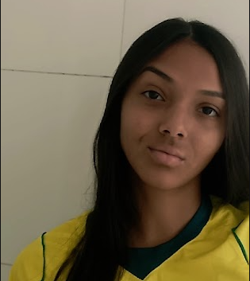

IOTClimate
- Home
- Sobre
- Produtos
Sobre Nós
Somos um grupo de estudantes do curso de Análise e Desenvolvimento de Sistemas (ADS) do SENAI. Ao longo da nossa formação, desenvolvemos projetos que unem tecnologia, criatividade e trabalho em equipe, colocando em prática os conhecimentos adquiridos e buscando criar soluções inovadoras para diferentes desafios.
Sobre o Projeto
Nosso projeto é um sistema de monitoramento ambiental que utiliza sensores para coletar dados sobre a qualidade do ar, temperatura, umidade e outros parâmetros ambientais. Esses dados são transmitidos para uma plataforma online, onde podem ser visualizados em tempo real e analisados para identificar padrões e tendências.

Manuella da Silva Piva
Presidente e Criadora da IOTClimate
2012 - Hoje

Ayla Cristina da Silva Vilela
CEO da IOTClimate
2014 - Hoje

Maria Vitória Guedes Ferreira
COO da IOTClimate
2016 - Hoje
Gabriella Camacho Stavarengo
CFO da IOTClimate
2017 - Hoje
Gustavo Millamonte
CTO da IOTClimate
2022 - Hoje